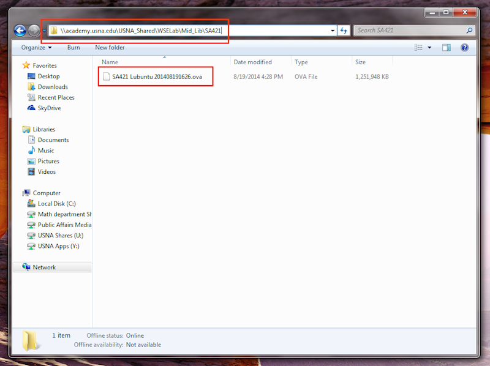

Here are some instructions on how to get the SA421 virtual machine working on your own computer.
- Download the latest version of VirtualBox for your platform here.
- You can install the VirtualBox Extension Pack if you wish, but it is optional.
- Install VirtualBox. If you need detailed instructions, take a look here.
- On Windows, just run the .exe file and follow the instructions on the screen. The default settings are sufficient.
- Find the SA421 VM appliance on the USNA network. The most
straightforward way is to directly enter the path
\\academy.usna.edu\USNA_Shared\WSELab\Mid_Lib\SA421\
into a Windows Explorer window:

- Drag the VM appliance, named something like SA421 Lubuntu 2014xxxxxxxx.ova
to your desktop.
- Double-click the appliance file on
your computer. If VirtualBox is installed properly, it should launch
and ask you about setting up a new virtual machine. Accept the
default settings.
- You should now find a SA421 Lubuntu virtual
machine available in the Oracle VM VirtualBox
Manager.